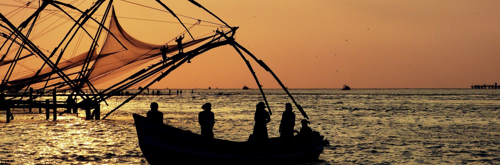

Kochi
Ernakulam, located in the southwest of India, serves as Kerala's vibrant commercial center, driving the state's economy through trade, commerce, and industry. Its coastal position along the Arabian Sea offers a diverse landscape of urban areas, coastal stretches, and tranquil backwaters, blending scenic beauty with economic opportunities.
Last updated 3 mins ago